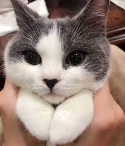

Котики - милые и пушистые (не всегда) создания, которых мы держим у себя дома.
Лучше не спрашивайте об этом у биологов, они, как пресловутый поручик Ржевский, уже успели всё опошлить, точнее, свести наше искреннее чувство к реакциям на… действия паразитов. Любить котов нас заставляют токсоплазмы, утверждают учёные и приводят данные по крысам. Паразитам-токсоплазмам для размножения нужны кошки, а потому, попав в организм крысы, они заставляют грызунов не то, чтобы полюбить, но во всяком случае не бояться котов. Финал предсказуем: кошка съедает бесстрашную (или влюблённую) крысу, токсоплазма попадает в кошачий организм. Мы, как и крысы, стараемся быть поближе к кошкам, если нами руководит токсоплазма, — спроецировали учёные ситуацию на человека. Верить им или не верить? Решайте сами.
Еще одну версию зарождения любви к кошачьим выдвигают этологи. Красота кошки – это красота смерти, уверяют они. Крупные кошачьи охотились на предков человека, и древние люди волей-неволей вынуждены были наблюдать за ними, изучать их повадки, чтобы вовремя заметить опасность и отреагировать на хищника. Хищники несли смерть, а всё, что связано со смертью, мистически притягивает людей. Человек уже не только боялся пещерного льва или саблезубого тигра, но одновременно и восхищался ими. А приручив некрупную кошку и одомашнив её, он как бы приручил смерть и обрёл тотем, который защищал его от крупных хищников. Есть ещё вариант – любовь по расчету. Кошка спасала от мышей зерно и другие продовольственные запасы человека, потому и полюбилась ему, как экономически выгодный партнёр. Но если у поколений ваших предков нет и не было амбара с зерном, который надо спасать от нашествия длиннохвостых, то для чего вам любить кошку?
Да просто для того, чтобы любить, скажут психологи. Львиная доля любви, которую человек по тем или иным причинам недодаёт своим близким, достаётся его кошке, утверждают эти специалисты-душеведы. Кошка сама ведёт себя как квалифицированный психолог – с одной стороны, всегда готова принять любовь человека, а с другой – держит его в определенной степени напряжения, почти мгновенно превращаясь из пушистой прелести в когтистую фурию. Это считается типично женским поведением. Вот только кто кого научил таким приёмам «влюбления» — женщина кошку или кошка женщину? Красивые, грациозные, приятные наощупь, одновременно мягкие и своенравные, кошки обладают удивительной способностью делать дом уютным и создавать в нем особую ауру. Кстати, еще один секрет кошки в том, что она может дать человеку своеобразный наркотик. И наркотик этот – кошачье мурлыканье! Довольно мурчащая кошка создаёт вибрации, которые запускают определенную биохимию в организме человека. Цепочка превращений веществ приводит к… раздражению каннабиноидных рецепторов нейронов мозга. Человек получает свой «наркотик», но не раньше, чем удовлетворит потребности кошки – ведь чтобы кошка замурчала, она должна быть довольна и счастлива.
Больше информации вы найдете здесь
На этом все, так как у автор закончились идеи.